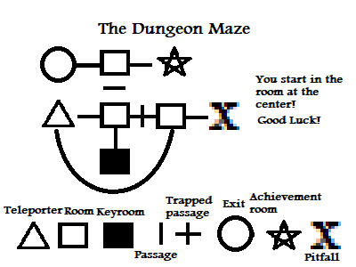
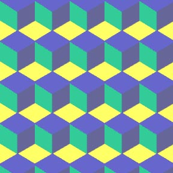

Blogspage
This, my friends, is where I write up all of my blogs. Come and read every
once in a while. I post up new stuff every Friday or so. Interesting stuff, I
promise!
Tags marked blue are for events, tags marked green are for thoughts, and
tags marked black are for undefined miscellanious
things. Dates are placed right next to the title.
A natural hiccup
4/11/2022
This week was a chaotic week, A solar eclipse followe from the previous week, which
I had forgotten to mention seeped in. A schedule change in wednesday, the dead pidgeon.
Another thing to add to this list is the earthquake that interrupted my day.
I was in class, bored out of my mind, half focused on the teacher, who was speaking in
a foreign language. I look to my right and dart myself back. I flt a vibration from my
seat. At first, I thought the seat was collapsing in on itself because of bad structure,
but then a few minutes again, the ground shaked up once again.
It wasn't much of a natural distaster, more of a weird snore. if I say so myself. As I always say,
remeber that to you I say hello, and maybe even goodbye.
In memory of the pidgeon.
4/11/2022
Last week I had spoken about raising a little pidgeon who could only walk. In the
day after that I would ccidentally set it free, which was both to my relief and my
regret. This tuesday, as I was packing my bookbag into the car and setting on my way
to school, I found a familiar cold body of a pidgeon.
Turns out, after a poke or two, that the pidgeon was realy the same pidgeon that I had
let out accidentally. From the looks of it, the bird probably fell from a branch trying
to take wing.
This post remains as a proof of the existence of this poor bird that would have otherwise
been forgotten and buried into the soi decomposing day by day into the nothingness of the
soil. To you I say hello, and maybe even goodbye.
A blind pidgeon in my home...
22/10/2022
Hello again, second blog because I'm just hardworking like that. Everybody knows I
am a hardworking blogger. When I miss deadlines, I punish myself because of just how
responsible and upstanding I am.
.png)
I was making paper aeroplanes, whenmy mother called me to go outside and see the bird
that fell out of nowhere. We brought it in and had it sit in a cardboard box and fed it
soggy bread and water. This is of course what all animals get upon coming to our house
because soggy milk and water is a universally loved meal.
Analyzing the bird's behaviour, I saw it stood in the same place with droopy eyes and
rarely reacted to its environment. I would have to shake it back into sense. I suspect
the bird is either blind, deaf, or retarded. It doesn't know how to fly despite having
all the attributes of a normal bird.
It is a pideon with a weird puff right below its head (might be breasts, I don't know yet),
Just a bit of a weird thing that happened today I wanted to share. I also noticed I was
making paper aeroplanes when this happened, such a weird coincidence. To you I say hello, and
maybe even goodbye.
The Theory of Everything22/10/2022
Hello!! Sorry for so much ignoring of this site. I have been busy with homework
and studying for assessments. Anyways, I have something to say.
Over the last few days, I have been on a very curious endeavur to find something.
I was struck with my idea. I had recently learned about string theory and so had
gotten my idea. A particle theory that completes all! I call it numerical energy.
The idea goes as simply as this. All matter is composed of compounds and molecules,
composed of atoms, composed of subatomic particles such as protons, neutrons, and
electrons. Those are composed of even smaller quantum particles that composed
everything in this world. My idea is that, instead of having them be strings or
particles in space, I believe it is composed of a collection of the same particles.
They are numbered. For every added particle it can change. This ties into the theory
of general relativity that all things with mass have gravity. I believe these smaller
general particles, which I call numerons, have a certain mass that decides all
properties of said quantum particle.
I tried to get knowledge about it by meeting the 11th grade physics teacher. I got
to transport some equipment for an experiment for light. That was when I realised
consulting an 11th grade physics teacher about something way past my cirriculum would
prove to be a shockingly hard attempt.
If I were more educated in physics, I would have known how to keep this theory intact
and credible; but since I am only but a 7th grader, I could only do so much. I must
start learning more and more. I seriously believe this could change the world. Will keep
updated on this idea! Remember that to you I say hello an maybe even goodbye.
The Ultimate Dungeon Maze!
23/9/2022
Hello fanatici textus, I am back and on schedule! As
you know, i've published a video on cheetahs, and
my friend, Mustafa, asked for a second video on
horses. Expect something new on my channel as it
will be active a lot of the time.
Now, over the week, I've been mastering a new
artform, a new intellectual artform. The artform
of mazes. I am in the process of creating, what I
believe is the ultimate maze. This is my magnum
opus; This is the Dungeon Maze!

The keyroom gives you one key, an item
that replaces locks with passages. Trapped
passages are passages that can only be
used once. Teleporters are rooms that teleport you
to a destination when entered. Teleporters can be
used multiple times. Achievement rooms are end states
that are achieved with a different method, a different
solve to the maze.
As you can see from the diagram above, This is a
variation of the classic labyrinth, except with a
few additions such as locked passages, trapped
passages, teleporters, and losing as well as middle
states.
I believe this type of maze can allow different
things. While multiple labyrinths only allow one
enjoyment, this can be done to achieve different
pathways and different achievements. You can
finally play a puzzle that has no end.
That was a simple diagram to showcase the
possibilities achievable through this form of maze.
I, although, am in the process of creating a maze
so large and expansive that it would take more than
a few minutes to solve. I want it to become a maze
that takes one thousand years to finally explore all
of its possible end states.
I will convert that maze from paper to computer game.
It will be so great it will be the next awesome thing
to have solved.
Since I am working so much on this, I will have to
call it quits on this blog, It's getting too long and
repetetive. I also have to get research for that
horse video! Remember that to you I say hello, and
maybe even goodbye!
The 1972 Iran Blizzard
16/9/2022
I had wanted to write this blog for a long time, but the exams catched up with me, and I didn't have any
time. This is the Iran Blizzard of 1972 that I had promised to write back at the start of the website,
so here it is.
Ever since the dawm of man, we have had to deal with natural disasters like hurricanes, winter storms,
blizzards, etc. etc. One of the deadliest blizzards we had to face was the 1972 Iran Blizzard. Here we go!
The 1972 Iran Blizzard was a deadly blizzard lasting an entire week which happened in southwest Iran from
the 2nd till 8th of February, 1972. It swiped through, killing approximately a population of 5000 people!
The locals had sat tight in their homes without water, heat, food nor any medical attention. It placed
extreme conditions upon them, as a lethal flu was passing around the nation pretty early before the events.
The snow blowed on, reaching heights of 3-8 meters deep of snow. The amount of damage was so collosal that
it was not properly measured! The temperatures dropped as low as -25 degrees centigrade.
In conclusion, this was the deadliest blizzard of the 20th century, and goes to show how deadly our friend
nature really is.
I have provided sources if you want to read more about this topic, Enjoy!
https://www.mentalfloss.com/article/29930/40-years-ago-iran-was-hit-deadliest-blizzard-history/
https://ww.devastatingdisaters.com/iran-blizzard-1972/
To you I say hello, and maybe even goodbye.
Addressing my absense!
16/9/2022
About my recent absense of the many from this website. I have to say that the return to school is the problem.
I had to prepare and endure three days of the week, and while that may sound like over-excaggerating to you, I will
have to admit to you that studying in the 7th grade is upped to a higher level. I have to move between classes, keep
track of time, and manage to write all my notes. After revising my notes this morning, I decided to write a new blog and
write a few more.
Sorry about the absense in the summer holiday. I had to write most of Crow Kid's chapters up until now. Everything
is going back on track, so returning to write more blogs might come more often. I will change the upload schedule to
every Friday instead now. Every weekday is as hard as the last one, and I doubt I'd be able to write up blogs on a
Thursday of all days.
Remember that to you I say hello, and maybe even goodbye.
An art project I've been working on
15/8/2022
So yes, I know I've been missing my own schedule that I made for myself, and that's mostly because
of some things I have in my real life. Past the work on Crow Kid(Hint: That sneak-peak
manuscript is coming very soon), I have been returning to a few of my old skills. I brushed up my
knowledge with C++, as I've actually started talking more to a friend I know for a long time (Quaxicron,
this is your time to shine!). I made a text adventure! Yes, the time I've been spending was on this
prototype for a very nice artistic text adventure game called FIELDS OF CAGEN(mostly reffered to as
FIELDS). It is a bit buggy and janky, so consider emailing me at the little email referrance
to the bottom. I have the link for all those viewing this on a MICROSOFT Windows NT operating system. Enjoy!
Fields Of Cagen prototype build no.0.01
A brief statement that all contents viewed in this website rightfully belong to the creator of this website,
and republication is strongly prohibited. This, and all past and future properties belong to me, S.P. Hurlsmith.
I would also like to remind you that to you I say hello, and maybe even goodbye.
Tesselations and the wonder of mathematical art
4/8/2022
 While researching for a topic for this blog, I expected to come across
something along the lines of algebra or calculus too complex for me to
understand (Refer to my "Cool Graphs" blog). Instead of that, I found
something that piqued my interest greatly, both mathematically and
artistically. A tessellation is a shape or combination of shapes that
cover a plane without any gaps or overlaps.
While researching for a topic for this blog, I expected to come across
something along the lines of algebra or calculus too complex for me to
understand (Refer to my "Cool Graphs" blog). Instead of that, I found
something that piqued my interest greatly, both mathematically and
artistically. A tessellation is a shape or combination of shapes that
cover a plane without any gaps or overlaps.
Tessellation, the word, comes from the latin word 'tessera,' which means
small stone or cube. These tessera were used to make 'tesselata,' which
are the tilings on the walls and ceilings of Roman buildings.
 Tessellations emphasize a very certain mathematical concept, that of which
is symmetry. The Dutch graphic artist, Maurits Cornelis Escher, defined
IV types of symmetry: translation, reflection, rotation, and glide
reflection. Translation, as many of my 6th grade mathematics classes have
told me, is the symmetry involving the drawing of a shape on a plane in
two different places on said plane. Reflection, is the reflection of a shape
over an axis or angle that creates a copy of that shape in the altered
alignment of the original on said axis or angle. Rotation is the symmetry
where a shape is repeated and rotated around one immovable point. Glide
rotation is a combination of translation and reflection where a shape is
both translated and reflected on a plane.
Tessellations emphasize a very certain mathematical concept, that of which
is symmetry. The Dutch graphic artist, Maurits Cornelis Escher, defined
IV types of symmetry: translation, reflection, rotation, and glide
reflection. Translation, as many of my 6th grade mathematics classes have
told me, is the symmetry involving the drawing of a shape on a plane in
two different places on said plane. Reflection, is the reflection of a shape
over an axis or angle that creates a copy of that shape in the altered
alignment of the original on said axis or angle. Rotation is the symmetry
where a shape is repeated and rotated around one immovable point. Glide
rotation is a combination of translation and reflection where a shape is
both translated and reflected on a plane.

There are many variations of tessellations involving, pentominoes,
tesselations within the limits of a circle, tesselations with a 3 dimensional
effect, tesselations with figures in place of shapes, and much more.
Tessellations are great, and they really show how much art and the sciences
can have in common. Both revolve around pattern, order, and stability. I can
see why they are used so commonly in tiling! The thing about these, is that
they can only be caged into numbers for so long before things become
overcomplicated and unintelligible to a regular person. This, in my opinion
is what separates them from anything on geometry's side.
Now, with all of this information on tessellations and the whatnot, I felt
obliged to create one of my own. Ladies and gentlemen, please be welcomed to
my tessellation of my own creation, the Wealthy Man's Carpet.

I hope you liked today's blog, if you'd like to see more of this, feel free to read some more information from the sources I've listed,
http://www.csun.edu/~Imp99402/index.html
http://www.csun.edu/~lmp99402/Math_Art/Tesselations/tesselations.html
https://www.wikipedia.org/wiki/tessellation
And remember, To you I say hello and maybe even goodbye.
The school year has ended!
24/6/2022

THE YEAR HAS ENDED BABY!!!!!!!!
I never thought this day would come, but it has, and happily so! After the grueling
final exams, I am able to return to my website, and continue what had been left alone
for so long.
An excuse for the unexpected leave of uploads; I had exams of course, and that's serious
business! I am now out of the routinely hellhole of school, so no worries for 2 months. Just
report card day(could decide the fate of my life), and graduation day(awesome!).
Ive receently been speedcubing and playing more chess and am slowly improving at both
of those. My writing has returned and I plan to make a schedule for my day to day life in
the summer(no strict times, I can wake up whenever I want). I know most of my classmates
plan to either play videogames all day, travel, or hibernate through the two months just
to return with the worst sleep schedules. Most of the next few blogs will be about my other
hobbies.
Happy summers, and remember; To you I say hello, and maybe even goodbye.
Cool graphs I think are interesting!
26/5/2022
As of recently, I hve been looking into the wonders of graphing. I found a
few graphs that I think are pretty interesting. So let's look at some
interesting graphs, shall we!
First up is the Linear equation in Slope-Intercept form. It has a pretty
analytical name, which does highlight how definite and simple the real thing is.
The equation goes as follows:
y=mx+b
This shows what I mean by a 'definite and simple' graph and equation. Take a look
at the graph.
 The linear graph in slope-intercept form. m=2 b=1.
The linear graph in slope-intercept form. m=2 b=1.
The interesting thing about this is that m makes x look like its going
The graph itself has dodged the origin point because of the unnessecary addition of b. This, while pretty
annoying for an equation, allows the line to not only cross through quadrants I and III, but also II. Now,
what if we want it to cross through the opposite quadrants? What if we made m<0?
 Red line: m=-2 b=1. Purple line: m=
Red line: m=-2 b=1. Purple line: m=
Now this is what happens when you make m a negative number. It crosses through the opposite quadrants.
The purle line added shows what would happen if you made m a fraction. This makes the illusion go the
opposite way. x is now going 4 times more than y! That's all that can be explored because of the simplicity,
but I can see myself using these to graph a rate of some sort (e.g. ciggarettes smoked/year) mostly because of
its compatibility with ratios and whatnot.
Now for the real deal, the quadratic equation! This one was a little bit tricky to understand, mainly because
of the polynomial nature of this equation, but in the end it does show a really cool graph. Here's
the equation I've been talking about so much.
y=ax2+bx+c
Notice the coefficients, constants, and overall complexity of this thing. This is all a little too over my level
because of how I am a 6th grader. But let's leave that behind and get to the core of this quadratic equation.
 The Quadratic equation in three examples.
The Quadratic equation in three examples.
The shape above that is made is a parabola! That is a curve that I never thought I'd see.
Anyways, let's move on now. The red line is the one I factored completely. In it, I made a=2 b=3 and c=1. It is
the usual parabola, but I did think it was a bit narrow so I changed a few things in the other parabolas.
In the green one, I decided to see what would happen if coefficient bx and constant c were to be removed. Surprisingly, it
positioned the vertex of the parabola at the origin point! Then I made a=
The blue one was where I really experinmented with everything else. In it I made c=0 because it really seemed unnessecary
of an addition. Then I made a=4 and b=6, which showed me what b did. B controlled the length of the parabola. I even
experimented with making b negative, which showed expected results by flipping the parabola horisontally.
That was a real deep look into the graphs that I researched. Remember though, this won't be the last time I talk about
cool and interesting graphs!
My awaited return!
17/5/2022
I bet you have slothed on this little forgotten project of a place.
DON'T BLAME ME!!!
I didn't have any tim for this thing as the pile of homework and worksheets that I had to do left me absolutely none time to maintain this hellsheet of a website.I did do some meaningful stuff in the chaos of school after exam season. I recently finished an 8 page comic book with pencil drawings called "PUFFBALL & CHICKEN LEGS." It was the first volume of an intended series, that of which I submitted to the library so that it could be under the public domain. Turns out, putting yourwork under the public domain, which most of the time does not care about the author nor value their work, is like creating the most attention catching neon light text that spoke "KICK ME!" I thought that somebody just had rented the book for themselves, but now it just feels like somebody threw it in the paper shredder never to be seen again. If I ever get hold of that comic, I am never going to put it in the library under public domain EVER again, and I would also post it online here for you! => Though, I am finally on and back on Stephensworld! I will return to my progress on Crow Kid, and post here very Tuesday, no
THURSDAY.
Yup, I've decided that Tuesday was too much a tiresome day for posting, and most of all it was in the midst of the week. Tuesday is strategically too bad for blogs. Thans, you deserve a lengthy blog for your paience that lasts two months and a few weeks. To you I say hello, and maybe even goodbye!A little thing I got to say.
21/3/2022Concerning my inactivity for such a long time... someguyshutup5@gmail.com The new email is a bit janky, so contact me with this until further notice. Sorry fellas! :/
Got a cool idea for a story, whaddayathink? 31/1/2022
So I've recently got this idea for a whole story about squirrels and ravens fighting for a forest. Decided
I could write up something along the lines of that. If you've got a thought on this, I could flesh the idea out.
The story here starts out with the setting. There are two islands, the good guys island and the bad guys island. The
forest is the one with the larger area, is on the good guys island, and it has been fully inhabited
by all types of animals, nice and exotic types aswell. This one is basically never visited to by a human.
The other one, is the wasted land, is located on the bad guys island, and is wasted out by humans but one thing we
know is that the ravens and sparrows live there. Only that, and then the entire climax happens.
One day a raven sets out to visit the world beyond their deaded out island(its about time they did). When this raven
comes back he tells them of the land and they soon over time build a relationship with them. But the sparrows and ravens
decide to take out the land for themselves,(dumb idea, youll see why) and start a war with them.
The war goes on and on and on, until the final battle where they are about to kill out the king of that forest land. And
then from there we lose the forest years after but in the end something happens.
The crows lose out their land and after all that squabbling and ribaldry they realise they doomed themselves.
This represents the idea of what ignorance and despair brings you, even more problems if not tackled well. I think this story
can teach that you should always think about what you do before doing it. That you shouldn't make impulsive decisions.
Anyways, thanks for tuning in on this little thought blog. To you I am Stephen P. Hurlsmith, and I say hello, and maybe even
goodbye.
Did some more research on snow solidifying. 25/1/2022
As the snowstorm week reaches its halt and spring arrives, I got some info on what was going on.
Turns out, that solid fragile rock-like snow is called heavy snow, and it usually is defined
as "snow that piles up to 2.032 decimeters in a day or less." And this snow was sure heavy. I'd
estimate around 1 decimeter on the first few days and 3 decimeters by the climax of this snow storm lasting a week.
Not to mention that the temperatures would go up to -15 degrees centigrade at the maximum. So this sure
was cold.
The events of the snow storm were a bit limiting. Our water supply froze, so for 4 days we had to
use bottled up water in tanks and our dishes and utensils piled up. Only today, as of writing,
has the water melted and reached our sink. To make matters even worse, for a short period of time between
friday and sunday our kerosene heater didn't work out. In Saturday, I tried playing out in the snow but
it was so cold outside that I couldnt feel my hand for 10 minutes and after, it became tiring to hold a pencil.
But all is well and fine now, the sun is reaching out and the snow is melting out now so there are no worries.
Though, this reminds me that there was an event a little similar to this(though more extreme) that
I could be talking about. The 1972 Iran Blizzard. Well, see you next tuesday, I'll probably be talking about it.
Snow reaching! Yippee or Oh no? 18/1/2022
A few days ago snow started to lighten up the whole place. It's a real refreshment
from the annual blaze of sun so hot it would tan anyone that stood under it for more than 30
SECONDS.
At first the snow was as regular as anything really. Me and my brothers got to wrap ourselves up and build
a crude sowman out of chunks of snow we found scattered across our neighborhood. It's more of a low budget
column than a real snowman with details but thst really doesn't matter. Not to mention I literally could not
feel my hands after I went out! Real problem honestly, but the laws of the universe will always freeze my
fingers off when it snows so it's better not to complain.

An image of me and my brother from Sunday.(I'm the taller one hehe)
The next day I woke up to realising that the whole thing had collapsed down overnight! But that's not the point,
the snow actually started to gather up and solidify. So it became snow but with the texture of a fragile rock. That's
really weird but I'll have to check it out for myself sometime.
Today the whole thing gets more and more strong, the air started to get midly harder to breathe in, as in fog takes up a good
chunk of the breathed air so it's like inhaling water but with a bit of air. Fog became so strong it could turn you blind.
Whatever it is, news predicts this unnatural cold will go on until the 25th! =O That's like alot of time for if you live where I live.
But luckily I got a break from school which really did help alot! They owe me a break after what I did.
That's all I really have to say for today really.